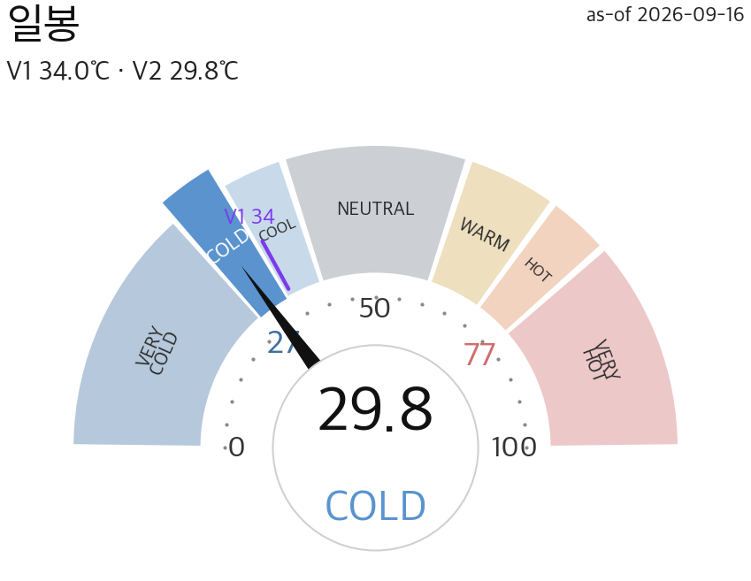
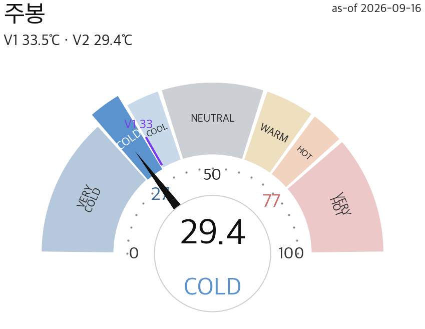
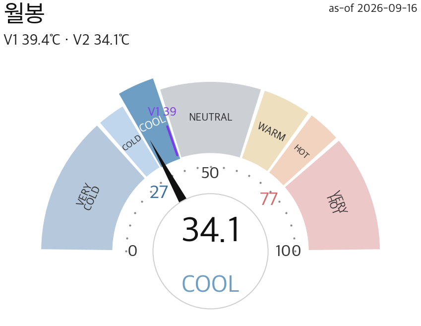
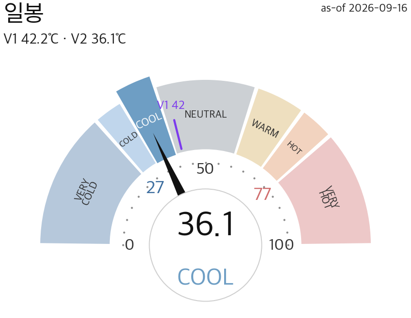
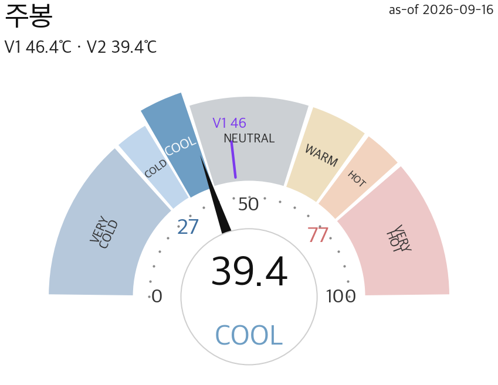
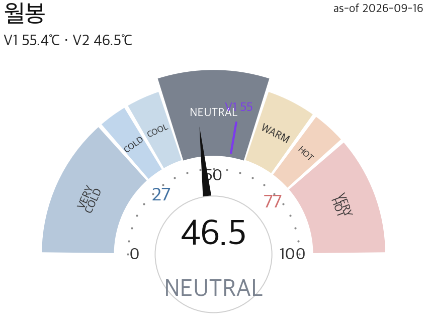
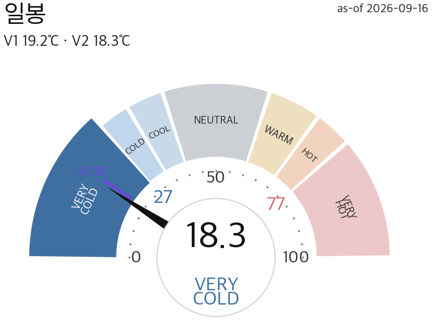
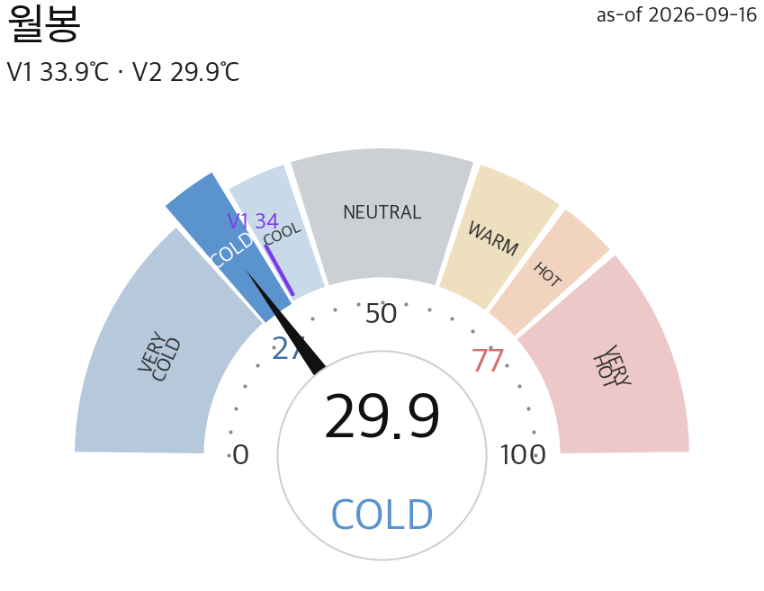

통합 (KOSPI200 + KOSDAQ150)
COLDV2 29.77 · V1 34.05 · Δ-1.9

전일대비 V1 ■0 · V2 ▼-1.9

전일대비 V1 ■0 · V2 ■0

전일대비 V1 ■0 · V2 ■0
외인 -16,718기관 +12,198개인 -11,980
📐 팬 = 개별 지수 세트
🎯 미armed(대기)
V2 36.07 · V1 42.19 · Δ-1.6

전일대비 V1 ■0 · V2 ▼-1.56

전일대비 V1 ■0 · V2 ■0

전일대비 V1 ■0 · V2 ■0
외인 -16,718기관 +12,198개인 -11,980
📐 고점 +6.9%저점 −5.5%
🎯 미armed(대기)
V2 18.3 · V1 19.23 · Δ-2.4

전일대비 V1 ■0 · V2 ▼-2.39

전일대비 V1 ■0 · V2 ■0
외인 -292기관 +220개인 +84
📐 고점 +6.3%저점 −6.8%
🎯 바닥 armed